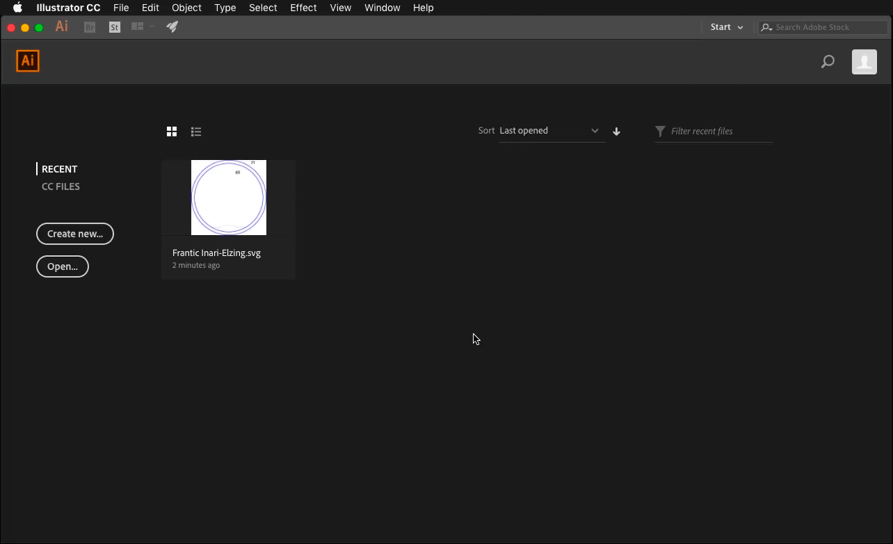
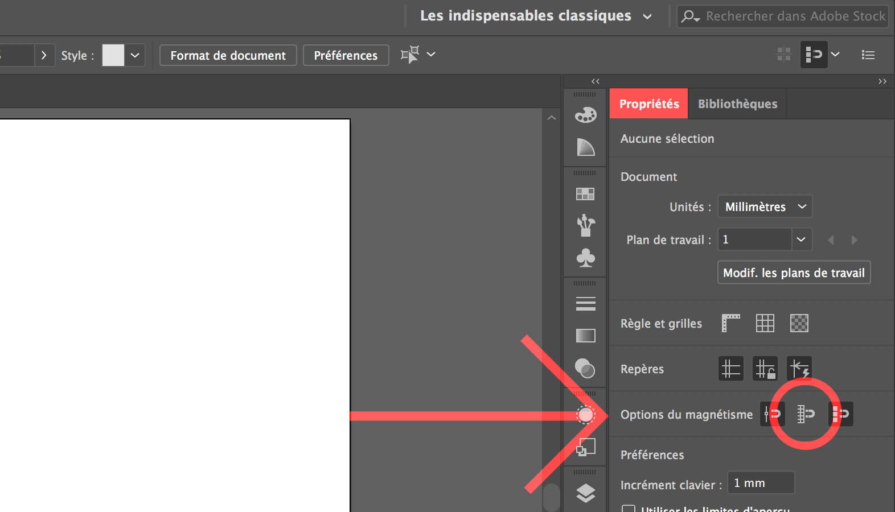
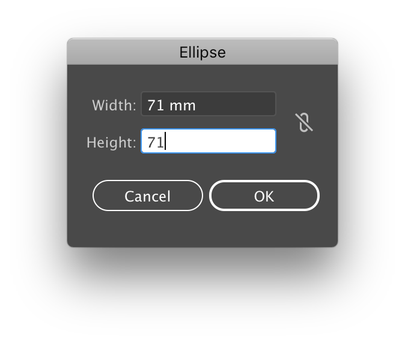
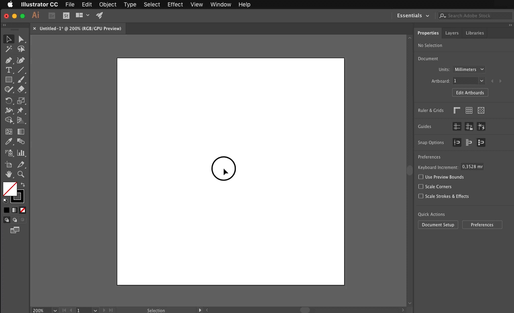
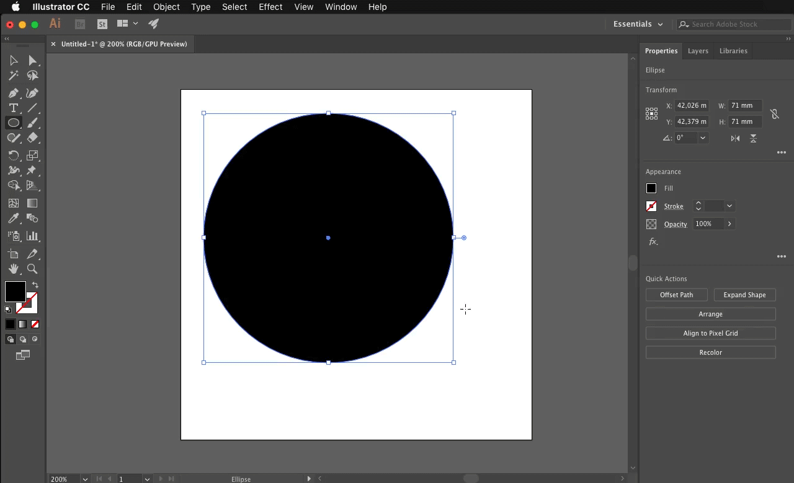
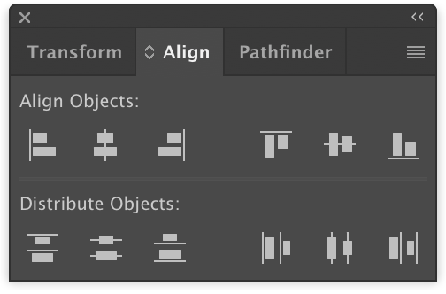
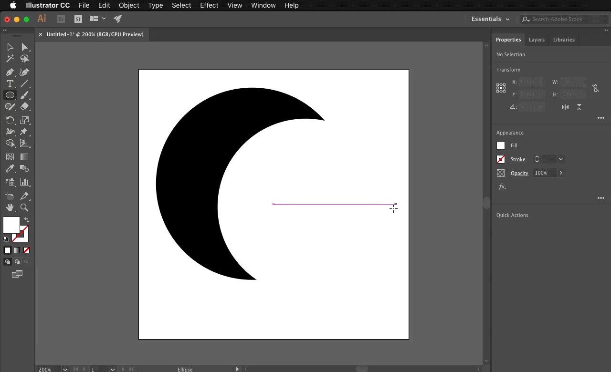

To begin, create a new document. Check that the units are in Millimeter and give it dimensions of 100 mm wide by 100 mm high.
In "Advanced", choose RGB Color and for "Raster Effects" "High 300 ppi". Click on "Create".
 Then, in your document properties (on the top right) verify that the option "Align the new objects on the grid in pixels" is unchecked. 
Select the "Ellipse" tool on the left side panel while holding the mouse button on the "Rectangle" icon. Then in the window that appears, click on Ellipse
(or by pressing the L key on the keyboard)
Make a simple click on the blank page to bring up a dialog box.
Enter the dimensions 71 mm width and 71 mm height.
(The icon to the right of the dimensions boxes allow links the proportions) 
Change the appearance of the circle with the options at the right of the document.
Next to "Ellipse" click on the first box and choose the black square, in the box immediately to the right select the square crossed in red called "None" this allows to obtain a transparent outline. 
Using the same method, create another 65 mm by 65 mm circle.
This time change the color of the circle by selecting the square white color, then in the box immediately to the right select the "None" square.
Now click on the "Select" tool in the left side panel to be able to select and manipulate the position of the circles freely. (Or by pressing the V key on the keyboard) 
Display the "Align" panel by selecting from the menu bar at the top of the screen, click on "Window" then on "Alignment" from the drop-down menu. (You can freely manipulate the position of the Alignment panel above your page) 
We will now highlight both circles and then in the "Align" panel.
Press the "Horizontal Align Center" button and finally "Vertical Align Center".  The white circle is now in the middle of the black circle.